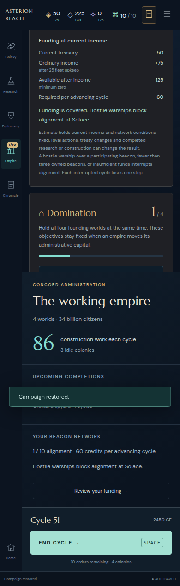
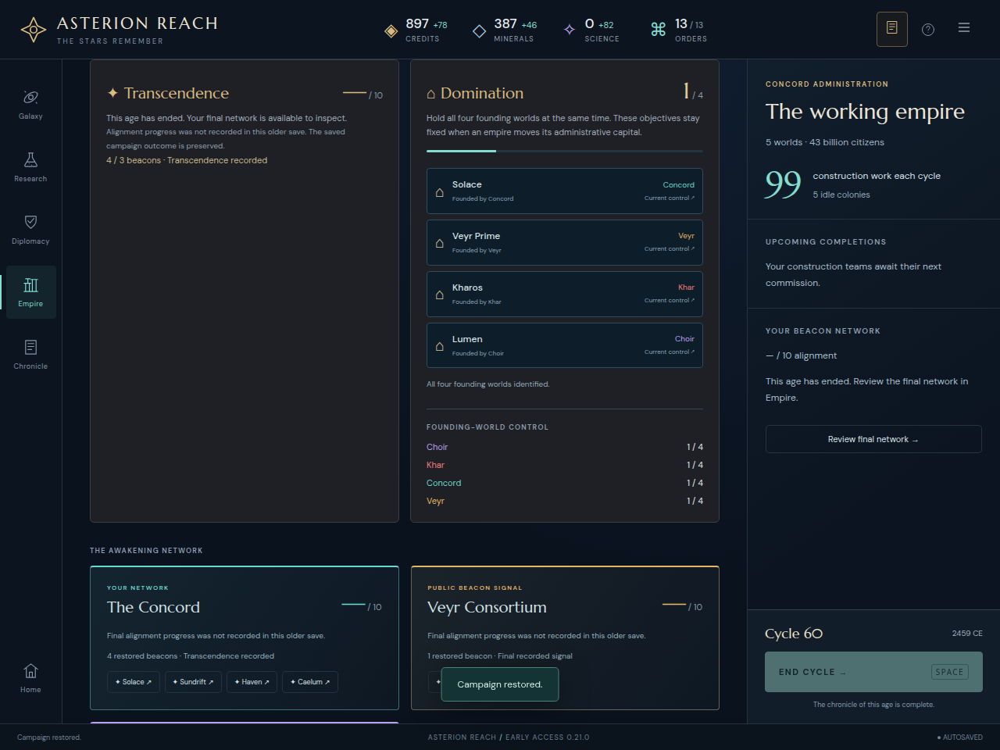

ASTERION REACH · INDEPENDENT FINAL FOLLOW-UP
Own funding links now reach the budget
Pass: nine targeted browser contexts and thirteen navigation landings. Both budget title and result are visible after each own-funding landing. The initial navigation finding is resolved. No further funding defect found in this bounded follow-up.
This is a targeted follow-up to the earlier independent core/UI review. It uses immutable production http://127.0.0.1:5213, version0.21.0, built at2026-10-29T02:25:01.556Z. The earlier /tmp/asterion-stage21-funding-review bundle is unchanged: every artifact and its manifest were rehashed successfully. Its eleven core fixtures and full eleven-view matrix were not rerun.
Navigation and visible outcomes
The desktop map’s Review your funding action and Empire context’s own-funding action now target the funding block. At1280 and390 pixels, the title, complete arithmetic and result are visible in the actual workspace viewport immediately after the context action. The390-pixel map mandate remains hidden under the existing narrow-layout rule; its action remains correctly marked as own funding in the DOM, and the reachable context link is tested instead of force-clicking hidden content.
The synthetic50-credit copy of actual WATCH51 still shows50 treasury,+75 ordinary income,125 available,60 required and65 credits remaining if alignment advances. Its top-bar tooltip retains the before-alignment scope. The70-credit upkeep fixture shows a visible11-credit shortfall after−21 income. A covered-funds blockade explicitly names the hostile warships atSolace at the direct landing, without requiring the reader to find text above. A separate combined blockade/deficit fixture retains its structural refusal in the card and applies shortfall styling to the11-credit funding result.
Completed legacy saves route Review final network to the saved alignment card, preserve unknown progress as an em dash, and render no future budget. A synthetic public Choir6/10 signal exercises the rival warning: desktop map and both-width civilization-dossier actions still target the public signals section. They do not redirect to the player’s funding.
Actual final production views
 1280-pixel map-to-funding landing. The initial link previously scrolled this block out of view.
1280-pixel map-to-funding landing. The initial link previously scrolled this block out of view.
390-pixel covered-blockade landing: the structural refusal remains intelligible alongside the budget.
Finished legacy navigation preserves the saved ending and suppresses future funding.Verification limits and provenance
The follow-up reads the same preserved fixtures from the earlier bundle, with two clearly labeled synthetic additions: a public rival alert and a combined blockade/deficit. None is a new played campaign. Every browser inspection preserves the full imported state. There are no browser exceptions, failed responses or document overflows. All thirteen measured destination headings, and every budget result at own-funding destinations, are visibly within the clipped workspace and browser viewport.
Only main.js, workspace-ui.js and alignment-outlook-ui.js differ from the earlier reviewed source snapshot. The pure funding helper, victory card renderer, CSS and all other captured source files are byte-identical. This follow-up checks navigation and final wording; ordinary-turn equality and the broader funding-helper boundary checks remain the separately preserved initial review’s evidence.
Summary · Detailed results · Source and production hashes · Runner · Artifact manifest
node /tmp/asterion-stage21-funding-final-review/follow-up.mjs
The runner uses its own fresh Chromium contexts, frozen fixture files and the immutable5213 server. It writes only this follow-up folder. No game-source edits, original-evidence modifications or broad suite reruns were made.